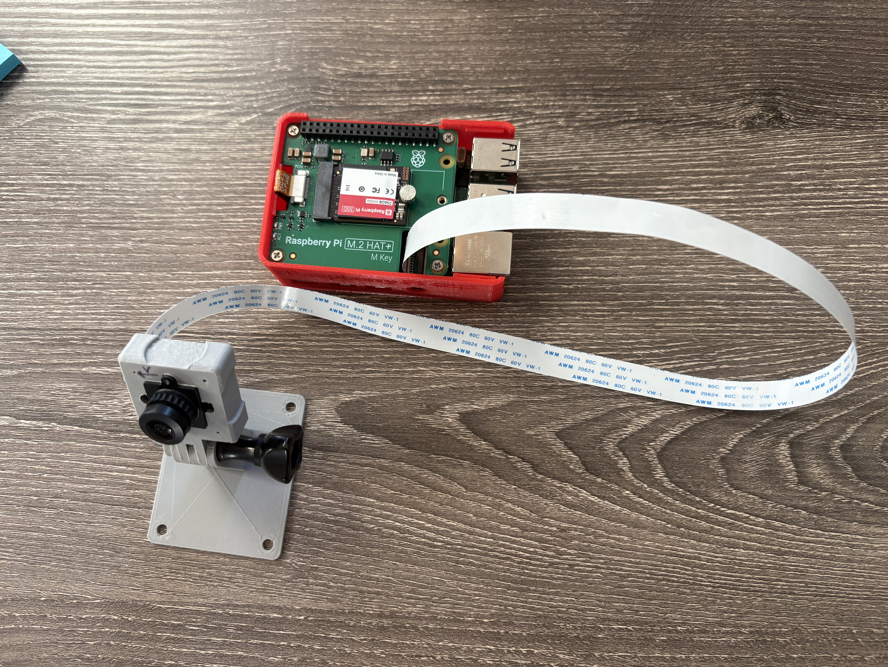
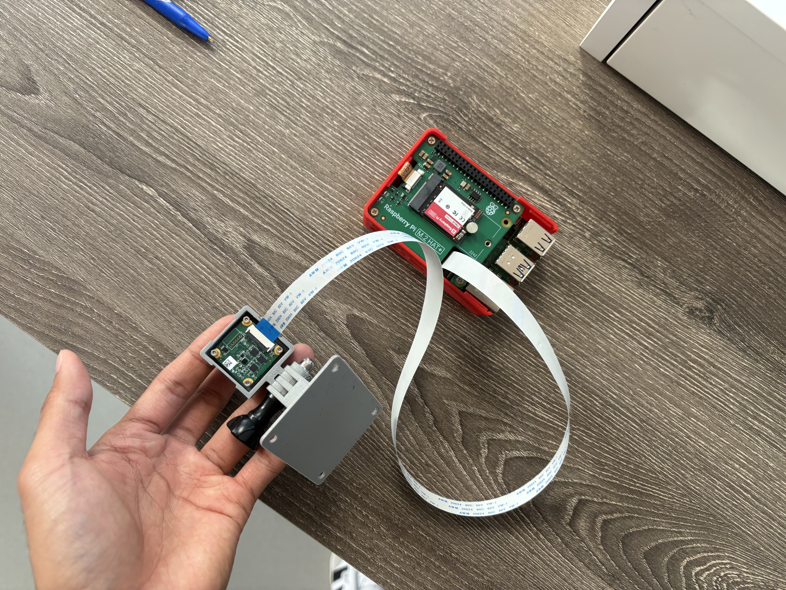
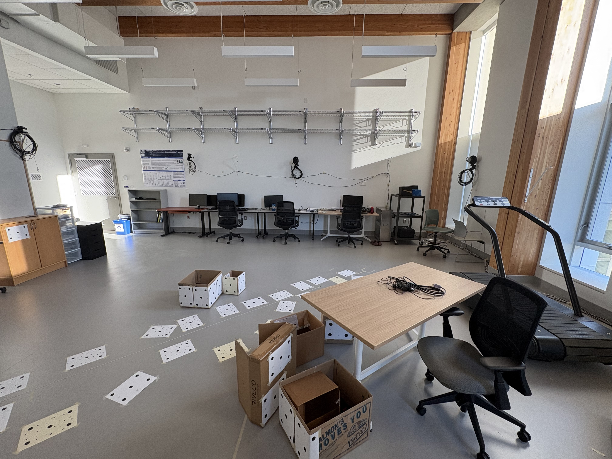
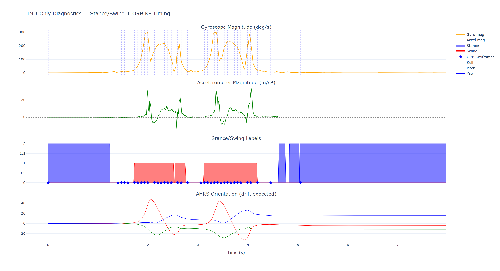
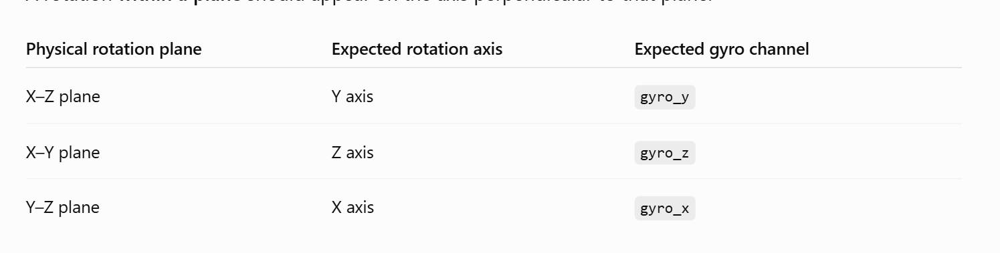

×
See It In Action
Three clips from testing: the gyro-stabilized pipeline tracking reliably through a full walking loop, the camera-only pipeline running in isolation, and one of the calibration bugs — a gyro under-reading its own rotation — caught on camera mid-test. What the camera and environment were, and how the fix in the first clip came about, follows below.
Working result: walking away from the start and back with the gyro-stabilized pipeline running — tracking holds for the whole loop.
Camera-only tracking: the map viewer, an RViz trajectory view, and a gyro diagnostic running side-by-side while isolating the camera from the IMU.
A bug, caught on camera: rotating the rig exactly one full turn — the tracked heading settles near 315° instead of 360°, the gyro-scale issue that had to be fixed before the retest above worked.
“I observed demonstrations of their work on several occasions, including a live demonstration of the system operating with the wearable camera while moving about our lab space. Developing such a system involves a number of non-trivial technical challenges, and their work provided them with practical experience applying computer vision and sensor-fusion methods to a real research problem.”
Dr. Jesse Charlton — Assistant Professor & Director, Applied Musculoskeletal Biomechanics Laboratory, School of Kinesiology, UBC
Overview
This work is part of a Sensorimotor Physiology Research Intern position at UBC (Jan–Aug 2026), on real-time sensing, visual-inertial SLAM, and human motion analysis. It grew out of earlier motion-tracking and biomechanics work on the same platform: a Red Pitaya interface streaming real-time IMU data, and a Python pipeline connecting that stream into OpenSim for real-time motion visualization and biomechanical analysis. I also investigated sensor orientation estimation and fusion — working with the VQF algorithm and reading through the xioTechnologies Fusion (imufusion) library's AHRS implementation as reference (third-party code, not something I authored).
That background led toward visual and visual-inertial SLAM. The resulting system streams camera and IMU data from a Raspberry Pi into a ROS2/WSL environment running ORB-SLAM3, producing a live, scale-corrected trajectory that I validated first against the TUM RGB-D benchmark, then against known-distance walking tests on the custom hardware.
Problem / Goal
Build a portable, real-time visual-inertial tracking system from consumer-grade hardware, and prove it's accurate enough for real motion/biomechanics research — not just a demo.
Consumer-grade hardware only. A Raspberry Pi camera and a low-cost IMU — no off-the-shelf motion-capture rig.Real-time, not post-processed. The pipeline had to produce a live trajectory, not an offline reconstruction.Prove it, don't assume it. An off-the-shelf SLAM pipeline wasn't guaranteed to work on non-standard hardware — accuracy had to be validated against a known benchmark, not assumed.
My Role
As the research intern on this project, I owned the pipeline end to end:
Sensor-streaming foundation. Built the Red Pitaya IMU-streaming interface and the Python/OpenSim pipeline for real-time motion visualization and biomechanical analysis.Visual SLAM pipeline. Integrated ORB-SLAM3 into a live ROS2 pipeline and extended it toward visual-inertial fusion.Camera/IMU bridge. Wrote the streaming and bridge scripts connecting the Raspberry Pi camera and IMU into ROS2.Calibration. Built a custom fisheye calibration workflow around OpenCV.Debugging. Diagnosed and fixed several synchronization and initialization bugs.Validation. Designed and ran the physical experiments that validated tracking accuracy.
ORB-SLAM3, OpenCV, OpenSim, and the Fusion AHRS library are third-party tools I integrated, configured, and in some cases patched — not algorithms I invented.
System / Architecture
Hardware: a TechNexion TEVM-AR0234-C-S191-IR-RPI15 camera module for Raspberry Pi, acquired on a Raspberry Pi and streamed over TCP — the camera was never a local USB webcam, which is why a custom acquisition/calibration pipeline was necessary. Per TechNexion's spec sheet, the module carries an onsemi AR0234 global-shutter sensor (1920×1200, MIPI CSI-2) behind a 191.28°-diagonal fisheye lens (the "S191" in the part number — matching the extreme distortion discussed below), plus an onboard ST LSM6DSO16IS IMU, which I sampled at approximately 208 Hz.

The rig: Raspberry Pi (red case, M.2 HAT) connected over a ribbon cable to the TEVS camera module on its 3D-printed mount. Because the IMU is built into the camera module itself, camera and IMU move together as one rigid unit by construction, not because of any extra mounting work.

Close-up: the camera module's small carrier board, visible here behind the lens assembly, is where both the AR0234 sensor and the onboard IMU live — a fixed, known camera-to-IMU transform (Tbc) by design, which matters once you're trying to debug whether that transform is configured correctly in software.

Test space: the lab floor with marker boards laid out along a measured path — this is where the known-distance walking tests referenced later (the 5 m scale-calibration test) were actually run.
Architecture: camera and IMU streams leave the Pi over TCP, cross into WSL through a Windows portproxy, and become ROS2 topics that ORB-SLAM3 consumes — the diagram below is the text version of this same path.
TechNexion TEVS module — AR0234 image sensor + onboard LSM6DSO16IS IMU
│
┌────────────┴────────────┐
image stream IMU stream (~208 Hz)
│ │
Raspberry Pi acquisition Raspberry Pi acquisition
│ │
TCP / MJPEG stream TCP stream
│ │
└──────────────┬────────────┘
Windows → WSL
│
ROS2 bridge nodes
│
/camera/image_raw /imu/data
│
ORB-SLAM3 (mono-inertial)
│
pose · tracking state · trajectory
│
trajectory publisher → 3D viewer / live dashboard
ROS2 was the runtime communication layer, not just "data organization" — it let independently-running nodes (camera bridge, IMU bridge, SLAM node, trajectory publisher, dashboard) publish and subscribe without tight coupling, carried per-message timestamps critical for sync, and exposed runtime parameters (e.g. scale correction) that could be changed without relaunching the pipeline.
WSL/ROS2 + ORB-SLAM3 was chosen over a MATLAB-based pipeline for this stage of the work: MATLAB doesn't run the pipeline in real time, has no built-in fisheye camera model equivalent to ORB-SLAM3's Kannala-Brandt implementation, and has much weaker IMU/visual-inertial fusion support.
Engineering Process
01 Baseline Validated ORB-SLAM3 against the known EuRoC MH_01_easy dataset before trusting custom hardware.
02 Calibrate Built a custom fisheye calibration workflow around OpenCV for the TEVS camera's exact stream resolution and crop.
03 Integrate Streamed camera and IMU data from the Raspberry Pi into ROS2 over TCP.
04 Debug Investigated tracking loss, timestamp mismatches, IMU queue gating, motion blur, and initialization failures.
05 Measure Ran controlled stationary and known-distance movement tests instead of judging the pipeline from a single trajectory plot.
06 Calibrate Scale Converted the monocular trajectory's arbitrary scale into physical units using a measured-distance test.
07 Validate Compared against measured motion, with Vicon ground-truth comparison as the next validation step.
Challenges & Debugging
Failures were part of the process, not a footnote — tracking initially failed, calibration needed independent validation, and several distinct bugs had to be isolated one at a time. Here's where it ended up, followed by the problems that had to be worked through to get there.
Where it ended up
After the gyro scale/axis fix and the ChArUco recalibration described below, the pipeline went from dropping tracking within seconds to holding a stable lock through real movement tests.
Loop-closure walk: walking away from the starting point and back to it with the gyro-stabilized pipeline running — TRACKING OK holds for the whole loop, and the trajectory returning close to its own start is a useful sanity check on drift, separate from the RECENTLY_LOST failures shown further down.
Body-tilt robustness test: checking whether tracked features still match frame-to-frame once the camera tilts with body lean, rather than only validating the pipeline while held level.
Foot trajectory: the same corrected pipeline tracking a foot's movement path — the kind of measurement the biomechanics/motion-analysis side of this research actually needs, not just a camera held steady.
Getting there took working through several distinct problems, one at a time:
First hardware attempt: not going okay
Before trusting the pipeline on real hardware, I validated ORB-SLAM3 against the EuRoC MH_01_easy dataset. The first run on the actual TEVS camera and Raspberry Pi rig was a different story: the trajectory's start and end height didn't match, and the plotted path showed the camera moving backward for a segment where, on video, it clearly moved forward two steps. That mismatch was the first sign that calibration and axis conventions — not just "SLAM working or not" — needed real scrutiny.
Isolating camera-only and IMU-only before blaming either one
Rather than keep debugging the combined mono-inertial pipeline, I ran the camera and IMU separately. Camera-only tracking (no IMU) was inconsistent between runs — a repeat of the same short path produced two visibly different loops. IMU-only dead-reckoning (no camera/SLAM) showed the orientation drift you'd expect from integrating gyro/accel alone with no visual correction. Neither subsystem was trustworthy in isolation yet, which reframed the problem: get camera-only and IMU-only each behaving predictably first, then combine them.
Camera-only test setup: running the camera-only map viewer, an RViz trajectory view, and a separate gyro-only rotation diagnostic side-by-side, specifically to remove the IMU from the SLAM path while still recording what the IMU was reporting for comparison.

IMU-only diagnostics: gyroscope and accelerometer magnitude, automatically-labeled stance/swing phases, and AHRS orientation over time for a walking test with no camera involved. The orientation trace (bottom panel) keeps drifting rather than settling — expected for dead-reckoning alone, and the reason IMU-only was never meant to stand in for full SLAM.
IMU-only test setup: a pure gyro/accel dead-reckoning path viewer with the camera feed kept view-only (no ORB feature detection running), so any drift visible here can only be coming from the IMU integration, not from SLAM.
Combined camera+IMU test: with both sensors feeding the mono-inertial pipeline together, the on-screen status reads RECENTLY_LOST and the live feed shows "Fail to track" — worse than either sensor performed alone. This result is what triggered the six-hypothesis investigation described next.
Why the combined camera+IMU run looked worse than either alone
The first live mono-inertial test tracked briefly then dropped to RECENTLY_LOST. Six candidate explanations were on the table: wrong gyro scale, a timestamp/dropped-sample problem, wrong gyro units (deg/s vs the rad/s ORB-SLAM3 and ROS expect), wrong axis mapping between the IMU and camera frames, a wrong camera-to-IMU transform (Tbc), or camera/IMU samples simply not being synchronized. To test the axis and scale hypotheses directly, I ran a controlled 360° rotation test on the IMU-only dead-reckoning path: rotating the rig exactly 360° integrated out to only about 315° — roughly a 12.5% under-read, giving a correction ratio of 360 / 315 ≈ 1.143, though I treated that as a hypothesis to confirm across repeated tests rather than a number to apply blindly. Axis mapping was checked against the expected rotation-plane-to-gyro-channel relationship (rotation in the X–Z plane should appear on gyro_y, X–Y on gyro_z, Y–Z on gyro_x) before accepting the scale correction.

Axis-mapping reference: the expected relationship between the plane you physically rotate the rig in and which gyro channel should register it — used as a checklist to rule out (or confirm) a wrong axis-mapping bug before trusting any scale correction.
360° rotation test: physically rotating the rig exactly one full turn while watching the integrated gyro heading in RViz. It settles at roughly 315° instead of 360° — a repeatable ~12.5% under-read that pointed at gyro scale rather than random noise as the source of the earlier bad combined-mode trajectory.
Wrong network path. A stale Windows portproxy entry was forwarding to an old, dead Pi IP (192.168.137.92) instead of the active one (192.168.137.209). Camera frames never reached ROS2, which looked like a SLAM failure but was actually a networking misconfiguration.
Calibration needed real data, not guesses. An initial calibration with guessed fx/fy (600.0, 600.0) and zeroed distortion coefficients produced 21% obviously-wrong map points — a 191° fisheye lens has ~75.6% distortion, far too extreme for uncalibrated estimates to work. A first checkerboard-based calibration-capture pass then struggled with that same extreme distortion — many frames were logged as "checkerboard: not found" because the warped board didn't fit a standard corner detector. Switching to a ChArUco board (marker-based, robust to partial visibility) finally gave a clean calibration: 74/74 frames accepted at ~0.39 px reprojection RMS.
Checkerboard capture attempt: the capture tool repeatedly logs "checkerboard: not found" against the live fisheye feed — the 191° lens warps the board too much near the edges of the frame for a standard checkerboard detector, which is the concrete failure that motivated switching to ChArUco.
ChArUco capture (successful): the marker-based board that replaced the checkerboard — because each square carries its own identifiable marker, the detector can still calibrate from partially-visible or distorted views, which is what got the 74/74-frame, 0.39 px-RMS result.
PredictStateIMU() crash.NO_IMU_RECEIVED diagnostics tracking sample count, measured frequency, and accel/gyro magnitude.Clock misalignment. The Raspberry Pi's clock was initially off by several days, and after fixing that, a residual ~10–12 second offset still needed investigation — significant when the IMU runs at 208 Hz but images arrive far less often.Stationary-gating bug. A staged test flow waited for a stable period before starting a movement trial, but at 208 Hz a single noise spike could reset an otherwise-valid multi-second stationary countdown. Fixed with a ~150 ms debounce/grace window rather than just loosening the motion threshold.Motion blur limited tracking more than calibration did. A live test (\"Attempt C\") reached 74.8% frames tracked OK, but the effective incoming frame rate was only ~2.9 Hz versus a much higher camera-side target — pointing at streaming/encoding throughput and exposure settings, not intrinsics, as the next bottleneck. Shutter/gain (e.g. 4000/16 → tested against 1000/4) were tuned to trade brightness for reduced blur.Monocular scale was wrong by 9.36×, not 0.94×. A 5 m walking test produced a trajectory reading ~0.534 m; the correction factor is 5 / 0.534 ≈ 9.36. This became a reusable scale-calibration workflow (a scale_calibration_watcher applying a saved factor via ROS2 parameters) instead of a one-off manual multiplication.Physical straight line ≠ SLAM's +X axis. Monocular SLAM has no gravity/compass reference tying its world frame to the room — the world axes are defined by the initial camera pose. A straight physical walk can show up as motion across several SLAM axes; this is a constant rotational offset, not random tracking failure.Hardware failure. The camera fell during a measured-distance test and the FFC ribbon cable connecting it to the Pi disconnected/was damaged — diagnosed as a likely connector-level fault rather than assuming the camera or Pi itself was destroyed.
With the gyro scale correction applied, the axis mapping confirmed, and the ChArUco calibration rolled out, the retest at the top of this section is what came out the other side.
Testing / Validation
Before testing on custom hardware, I validated the Visual SLAM pipeline against the TUM RGB-D benchmark — a standard research dataset with ground-truth camera trajectories — and measured an absolute trajectory error (RMSE) of approximately 2.5 cm. Once the pipeline could track reliably on real hardware, testing shifted from "does SLAM run?" to "does the trajectory correspond to real movement?" — stationary tests (to characterize baseline jitter from image noise, vibration, and IMU bias rather than expecting a mathematical zero), a 5 m known-distance walking test for scale calibration, and directional tests examining individual axis displacement, initialization stability, and trajectory shape. A Vicon motion-capture comparison is the planned next step — run the same physical motion through both systems and compare position, scale, orientation, and drift, rather than assuming simultaneous operation alone would improve ORB-SLAM3.
Results
2.5 cm Absolute trajectory RMSE on the TUM RGB-D benchmark
0.39 px Fisheye calibration RMS (ChArUco)
208 Hz IMU sampling rate
74.8% Frames tracked OK in a 722-frame live test
1,758 Peak tracked features in that test
9.36× Measured monocular scale correction over 5 m
These numbers describe specific test runs and benchmarks, not a single universal accuracy figure — e.g. 74.8% is the tracking-OK rate for one live 722-frame session on custom hardware, separate from the 2.5 cm TUM RGB-D benchmark result above it.
Live dashboard: a browser-based view of live_pose.csv as the pipeline runs, showing the current trajectory and tracking status without needing the Pangolin viewer open.
Scale-corrected 5 m trajectory: the same walking-test trajectory after applying the 9.36× scale correction — the plotted path length now matches the physically measured 5 m distance instead of the raw ~0.534 m the monocular pipeline originally reported.
Technologies
C++ Python Linux WSL Raspberry Pi Red Pitaya ROS2
ORB-SLAM3 (integrated) OpenCV (integrated) OpenSim (integrated) Fisheye / Kannala-Brandt camera model
IMU sensor fusion concepts xioTechnologies Fusion library (investigated/referenced)
TUM RGB-D / EuRoC benchmarks TCP streaming Networking / port-forwarding debugging Data visualization
What I Learned
The biggest lesson was isolating variables in a system with many moving parts: camera-only runs to remove the IMU as a variable, dataset baselines to rule out hardware before blaming the algorithm, and diagnostics (tracking state, feature counts, IMU sample rate) instead of judging the system from a single trajectory screenshot. Several "SLAM problems" — the portproxy misroute, the scale error, the axis-offset confusion — turned out to be systems or math-convention issues once properly isolated, which changed how I approach debugging integrated hardware/software pipelines going forward.